Modelos de Series de Tiempo: Prophet y LSTM
2026-04-24
Prophet — Modelo de Pronóstico de Meta
Estacionalidad compleja
- Hasta ahora, hemos considerado principalmente patrones relativamente simples, como los datos trimestrales y mensuales.
- Sin embargo, las series temporales de mayor frecuencia suelen presentar patrones estacionales más complicados. Por ejemplo, los datos pueden tener un patrón semanal y otro anual.
- Métodos avanzados no lineales nos permiten modelar y pronósticar estos eventos.
Estacionalidad compleja

¿Qué es Prophet?
- Prophet (Taylor & Letham, 2018) creado por Facebook es un procedimiento para pronosticar series temporales basado en un modelo aditivo donde las tendencias no lineales se ajustan con estacionalidad anual, semanal y diaria, además de los efectos de los días festivos.
- Funciona mejor con series temporales que presentan fuertes efectos estacionales y varios periodos de datos históricos.
- Prophet es robusto ante datos faltantes y cambios en la tendencia, y generalmente maneja bien los valores atípicos.
Número de post en Facebook
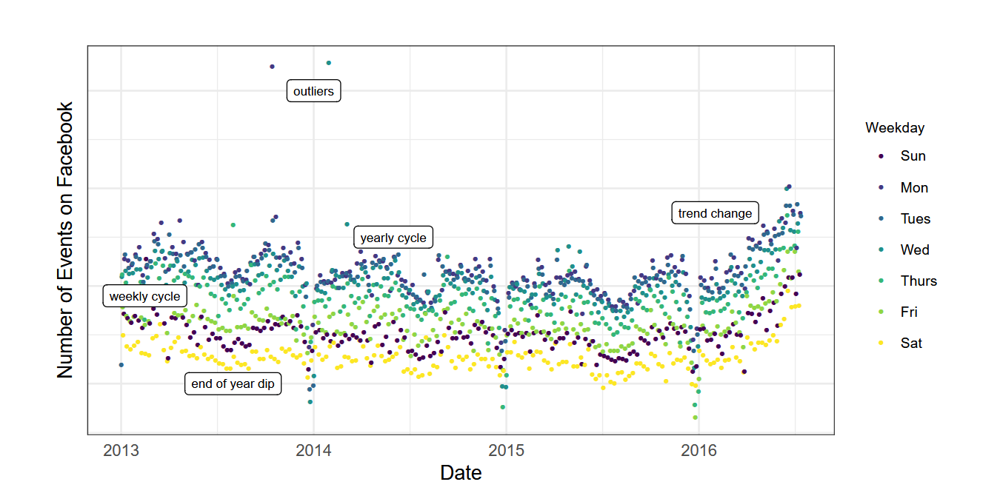
El modelo Prophet
- Es un modelo de descomposición aditiva no lineal :
\[y(t) = g(t) + s(t) + h(t) + \varepsilon_t\]
| Componente | Símbolo | Descripción |
|---|---|---|
| Tendencia | \(g(t)\) | Describe una tendencia lineal a trozos (o «término de crecimiento») |
| Estacionalidad | \(s(t)\) | Describe los distintos patrones estacionales (diario, semanal, anual) |
| Festividades | \(h(t)\) | Efectos de eventos festivos conocidos |
| Error | \(\varepsilon_t\) | Término de error de ruido blanco |
Componente de tendencia
Prophet implementa dos modelos de tendencia:
1. Crecimiento logístico (saturado)
\[g(t) = \frac{C(t)}{1 + \exp(-k(t - m))}\]
Donde \(C(t)\) es la capacidad de saturación (puede ser variable), \(k\) la tasa de crecimiento y \(m\) el desplazamiento.
2. Tendencia lineal por tramos (piecewise linear)
\[g(t) = (k + \mathbf{a}(t)^\top \boldsymbol{\delta}) \cdot t + (m + \mathbf{a}(t)^\top \boldsymbol{\gamma})\]
Los changepoints son momentos donde la tendencia puede cambiar abruptamente. El modelo se estima utilizando un enfoque bayesiano para permitir la selección automática de los puntos de cambio y otras características del modelo.
Tendencia saturada logística Prophet
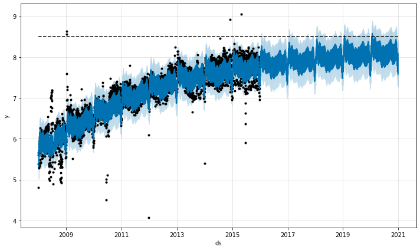
Cambios de tendencia estimada por Prophet
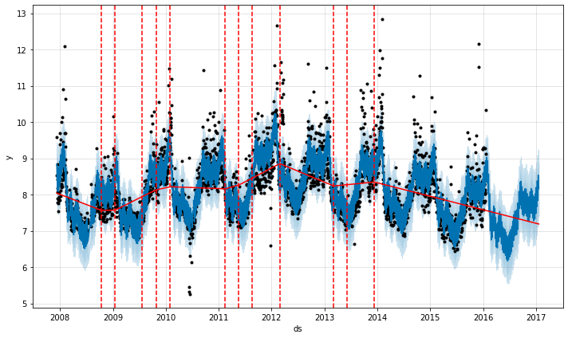
Componente de estacionalidad
El componente estacional consiste en términos de Fourier de los periodos relevantes
\[s(t) = \sum_{n=1}^{N} \left[ a_n \cos\!\left(\frac{2\pi n t}{P}\right) + b_n \sin\!\left(\frac{2\pi n t}{P}\right) \right]\]
Donde \(P\) es el periodo (días) y \(N\) controla la flexibilidad:
| Estacionalidad | \(P\) (días) | \(N\) default |
|---|---|---|
| Anual | 365.25 | 10 |
| Semanal | 7 | 3 |
| Diaria | 1 | 4 |
Los coeficientes \(\{a_n, b_n\}\) se estiman con prior normal (estadística bayesiana)
Componente de festividades
- Los efectos de las vacaciones se añaden como simples variables ficticias (dummy).
\[h(t) = \mathbf{Z}(t) \cdot \boldsymbol{\kappa}\]
Donde \(\mathbf{Z}(t)\) es una matriz indicadora de si \(t\) cae en una ventana de festividad, y \(\boldsymbol{\kappa}\) son los efectos estimados.
Las festividades pueden tener ventanas asimétricas, es decir, cuántos días antes y después del evento también reciben el efecto del holiday.
| Evento | Comportamiento real |
|---|---|
| Black Friday | Las ventas suben desde el jueves (día anterior) |
| Cyber Monday | El efecto se extiende al martes siguiente |
| Navidad | La demanda aumenta varios días antes |
Efecto de las estacionalidad y festividades
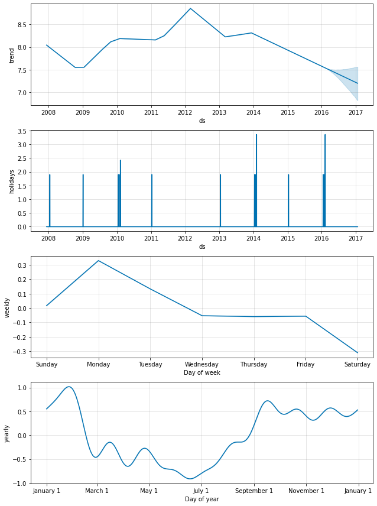
Validación cruzada
Prophet incluye una funcionalidad para realizar validación cruzada de series temporales con el fin de medir el error de pronóstico utilizando datos históricos. Esto se lleva a cabo mediante la selección de puntos de corte (cutoff points) en el historial.
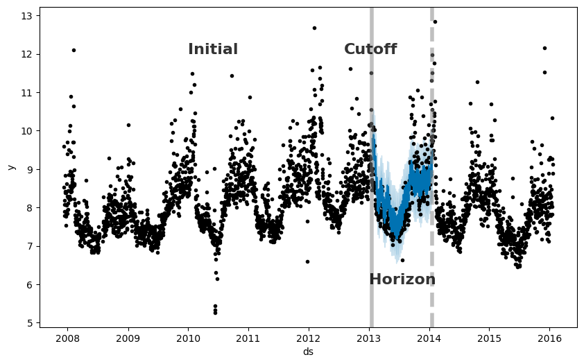
Usar Prophet
Python
R
LSTM — Long Short-Term Memory
Modelos de redes neuronales
- Una red neuronal puede concebirse como una red de “neuronas” organizadas en capas. Los predictores (o entradas) forman la capa inferior, y los pronósticos (o salidas) forman la capa superior. También puede haber capas intermedias que contengan “neuronas ocultas”.
- Las redes más sencillas no contienen capas ocultas y equivalen a regresiones lineales.
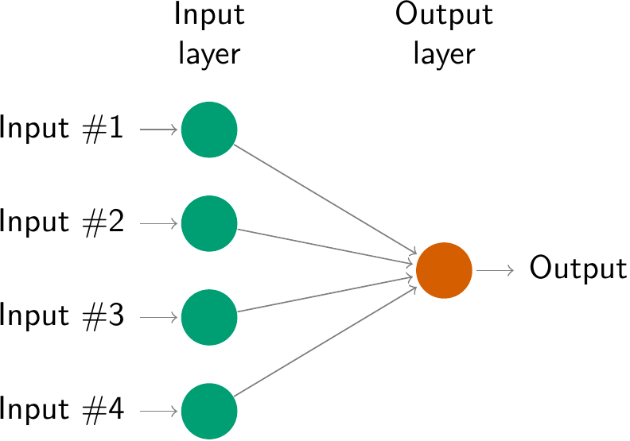
- Esto se conoce como multilayer feed-forward network (perceptron multicapa), en la que cada capa de nodos recibe entradas de las capas anteriores.
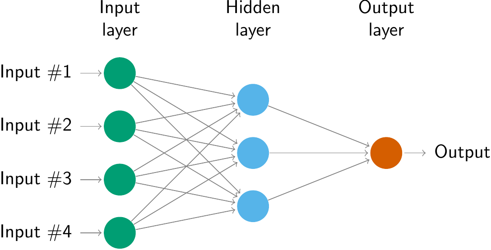
Perceptron con función de activación sinodal
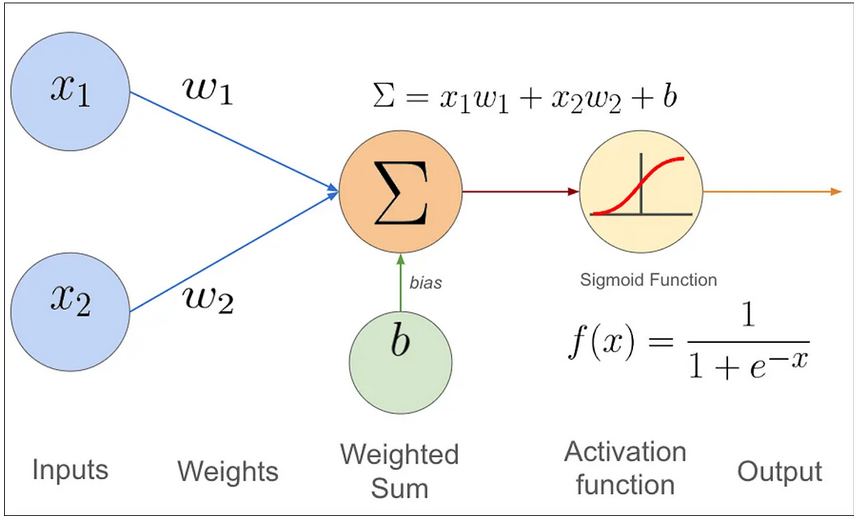
Funciones de activación
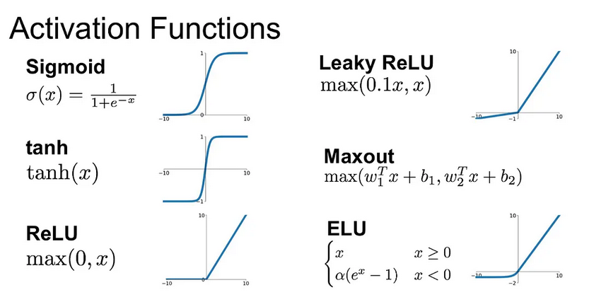
Cómo elegir la función de activación adecuada
La elección de la función de activación depende del tipo de problema que se intenta resolver. Aquí hay algunas pautas:
Para clasificación binaria
Utilice la función de activación sigmoide en la capa de salida. Esta función comprime las salidas entre 0 y 1, representando las probabilidades de las dos clases.
Para clasificación multiclase
Utilice la función de activación softmax en la capa de salida. Esta función genera distribuciones de probabilidad para todas las clases.
Si tiene dudas
Utilice la función de activación ReLU en las capas ocultas. ReLU es la función de activación predeterminada más común y suele ser una buena opción.
Redes Neuronales Recurrentes (RNN)
Una red neuronal recurrente (RNN) procesa secuencias iterando a través de sus elementos y manteniendo un estado que contiene información relativa a lo que ha visto hasta el momento. Es decir las RNN es un tipo de red neuronal con un bucle interno.
Si pensamos la serie de tiempo \(y_t\) como una secuencia donde cada valor depende de los anteriores, capturar esa dependencia temporal es precisamente el propósito de las RNN.
Las RNN procesan secuencias manteniendo un estado oculto \(h_t\):
\[h_t = \tanh(W_h \cdot h_{t-1} + W_x \cdot x_t + b)\]
\[\hat{y}_t = W_y \cdot h_t + b_y\]
Esquema de una RNN
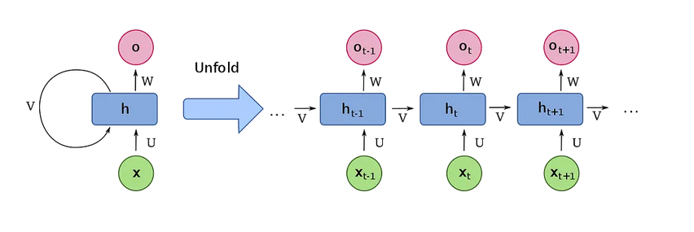
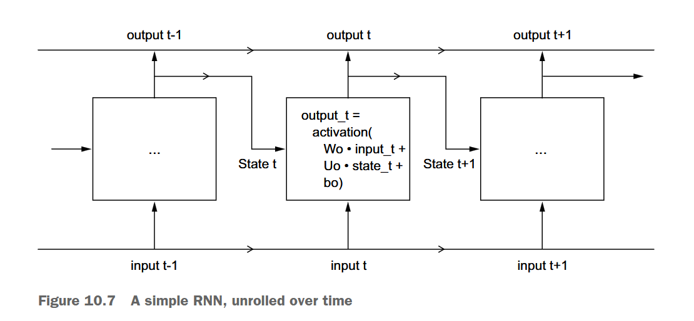
Problema del gradiente que desaparece en RNN
Imagina que tienes una cadena de personas pasando un mensaje. Cada persona modifica ligeramente el mensaje antes de pasarlo al siguiente. Después de 50 personas, el mensaje original es irreconocible. Eso es exactamente lo que le ocurre al gradiente en una RNN profunda.
En secuencias largas, el gradiente \(\frac{\partial L}{\partial h_1}\) tiende a cero exponencialmente ya que los pesos de la RNN son ajustados mediante back-propagation, es decir que el RNN va ajustando las estimaciones pasadas según la nueva información. Sin embargo:
\[\frac{\partial L}{\partial h_1} = \prod_{t=2}^{T} \frac{\partial h_t}{\partial h_{t-1}} \approx 0\]
Esto impide aprender dependencias de largo plazo. Esto impacta series de tiempo con dependencias largas o estructuras de estacionalidad largas.
La LSTM (Long Short-Term Memory) reemplaza la multiplicación repetida de derivadas por una suma controlada a través de la celda de memoria en la red.
Arquitectura LSTM (Long Short-Term Memory)
Las LSTM introducen una celda de memoria \(C_t\) controlada por tres compuertas:
Compuerta de olvido
Decide qué información de la memoria anterior \(C_{t-1}\) ya no es útil. \[f_t = \sigma(W_f \cdot [h_{t-1}, x_t] + b_f)\]
Compuerta de entrada
Decide qué información nueva del paso actual merece guardarse en la memoria. \[i_t = \sigma(W_i \cdot [h_{t-1}, x_t] + b_i)\]
Compuerta de salida
Decide qué parte de la memoria \(C_t\) es relevante para la predicción actual. \[o_t = \sigma(W_o \cdot [h_{t-1}, x_t] + b_o)\]
Las puertas se activan con una función sigmoide \(\sigma(z) = \frac{1}{1+e^{-z}}\) produce valores en \((0,1)\).
Flujo de información en LSTM
Note
Simplemente tenga en cuenta cuál es la lógica de la LSTM: permitir que la información pasada se almacene en una celda de memoria \(C_t\) tal que los efectos de largo plazo se mantienen.
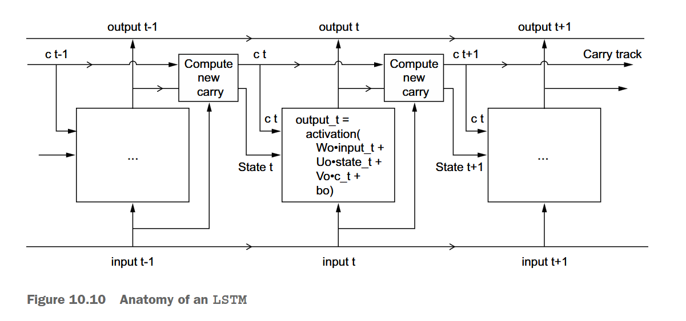
Variantes de LSTM
| Variante | Diferencia clave |
|---|---|
| LSTM estándar | Arquitectura original (Hochreiter & Schmidhuber, 1997) |
| Peephole LSTM | Las compuertas observan directamente \(C_{t-1}\) |
| GRU | Fusiona compuertas de olvido y entrada; sin \(C_t\) separada |
| Bidireccional LSTM | Procesa la secuencia en ambas direcciones |
| Stacked LSTM | Múltiples capas LSTM apiladas |
Uso de LSTM con Keras/TensorFlow
Python
R-Keras
# Instalar paquetes desde CRAN
install.packages(c("keras3", "tensorflow", "tidyverse", "recipes"))
# Configurar backend de Python (ejecutar una vez)
library(keras3)
install_keras(backend = "tensorflow") # Instala TensorFlow en el entorno Python
# Verificar instalación
library(tensorflow)
tf$constant("Hola LSTM") # Debe retornar un tensorComparación LSTM vs Prophet
| Dimensión | LSTM | Prophet |
|---|---|---|
| Paradigma | Aprendizaje profundo | Modelo estadístico-bayesiano |
| Interpretabilidad | Baja (caja negra) | Alta (componentes explícitos) |
| Datos requeridos | Miles de observaciones | Decenas a cientos |
| Estacionalidad | Aprendida implícitamente | Modelada explícitamente |
| Festividades | Requiere features manuales | Soporte nativo |
| Variables exógenas | Features adicionales | add_regressor() |
| Entrenamiento | Horas (GPU recomendada) | Segundos a minutos |
| Hiperparámetros | Muchos y sensibles | Pocos e intuitivos |
Aplicaciones Long Short-Term Memory (LSTM)
Se aplican redes LSTM para pronosticar la inflación en Colombia a 12 meses, comparando dos enfoques: uno univariado (solo inflación) y uno multivariado (con variables exógenas relevantes).
El entrenamiento usa rolling sample con selección de hiperparámetros basada en minimización del error de pronóstico.
El enfoque multivariado supera tanto al univariado como a modelos ARIMA optimizados (con y sin variables explicativas).
La ventaja predictiva del modelo multivariado es más pronunciada en horizontes largos, específicamente entre el séptimo y el doceavo mes.
Referencias Bibliográficas
- Hochreiter, S. & Schmidhuber, J. (1997). Long Short-Term Memory. Neural Computation, 9(8), 1735–1780.
- Graves, A. (2013). Generating Sequences With Recurrent Neural Networks. arXiv:1308.0850.
- Taylor, S.J. & Letham, B. (2018). Forecasting at Scale. The American Statistician, 72(1), 37–45.
- Meta Research. Prophet Documentation: facebook.github.io/prophet
- Chollet, F. et al. Keras Documentation: keras.io
- Abadi, M. et al. TensorFlow: tensorflow.org
- Allaire, J. & Chollet, F. R Interface to Keras: keras3.posit.co
UTB-ETD | Programa de Ciencia de Datos